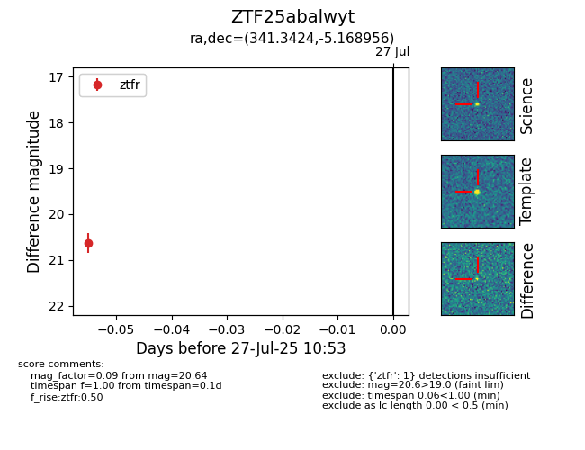

Target ZTF25abalwyt at 2025-07-27 10:53, see:
FINK: fink-portal.org/ZTF25abalwyt
Lasair: lasair-ztf.lsst.ac.uk/objects/ZTF25abalwyt
ALeRCE: alerce.online/object/ZTF25abalwyt
alt names
ZTF25abalwyt (ztf,fink)
coordinates:
equatorial (ra, dec) = (341.3424,-5.16896)
galactic (l, b) = (63.4551,-52.81579)
photometry
last ztfr=20.64
1 ztfr detections
